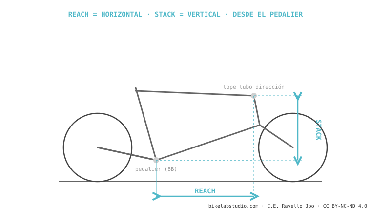

El reach es la distancia horizontal desde el pedalier hasta el tope del tubo de dirección: el largo real de tu cabina cuando vas de pie sobre los pedales. Es la medida que de verdad dice si una bici te queda larga o corta — más que la talla S/M/L, que cada marca define distinta. Junto con el stack son las dos coordenadas que comparan dos bicis de verdad. Por eso dos "talla M" pueden llevar 20 mm de reach de diferencia y sentirse como bicis distintas.
Si solo miras un número al comparar bicis o elegir talla, que sea este. El reach es la pieza madre del tamaño, y la que más confusión y dolor de fit causa cuando se ignora.
Quítale el sillín a la bici y ponte de pie sobre los pedales en una bajada. El espacio que tienes entre el cuerpo y el manillar — ese hueco — es lo que mide el reach. Nada que ver con la altura del sillín.

El reach va del centro del pedalier al tope del tubo de dirección, medido en horizontal. Por ser horizontal y arrancar en el pedalier, no depende de la altura del sillín: describe tu posición de ataque (de pie, peso al centro), que es la que importa en terreno técnico. Esa es su gran ventaja sobre medidas viejas como el tubo superior efectivo, que cambiaba con la inclinación del tubo de sillín.
Valores típicos de talla M, por disciplina. Varían bastante con la marca y el año — el patrón es lo que importa, no la cifra exacta:
| Disciplina (talla M) | Reach típico |
|---|---|
| XC | ~430–450 mm |
| Trail | ~450–475 mm |
| Enduro | ~460–490 mm |
Rangos orientativos de tablas de fabricante; anclar siempre al modelo y año concretos. La geometría moderna tiende a reaches más largos que hace una década.
Más reach → más estabilidad y más espacio de pie en bajada, peso mejor repartido; pero estira el cuerpo, hace la dirección más lenta y cuesta más cargar la rueda delantera en curva. Menos reach → más ágil, fácil de levantar el frente y maniobrar, pero más apretado y con tendencia a irte por delante en pendiente. Y no todos los milímetros pesan igual: cambios de 5 mm casi no se notan, 20 mm ya es serio, 40 mm es prácticamente otra bici.
El largo real de tu cabina de pie: del pedalier al tubo de dirección, en horizontal. No depende del sillín.
Equilibrio, no carrera. Más = estable pero estirado; menos = ágil pero apretado. Iguálalo a tu cuerpo.
Sí. La talla la define cada marca a su antojo; el reach es medible. Compara reach y stack, no S/M/L.
Dinos tu altura, tus medidas y tu estilo, y te decimos el rango de reach que te queda y qué bicis lo cumplen. Escríbenos por WhatsApp
© 2026 BikeLab Studio. Contenido bajo CC BY 4.0: puedes copiarlo, traducirlo y publicarlo, incluso con fines comerciales. La cita es obligatoria. Sin atribución, la licencia se revoca de forma automática (CC BY 4.0, §6.a) y el uso pasa a ser una infracción de derechos de autor: solicitamos la retirada del contenido y su desindexación. · Diseño y propiedad: Carlos Ravello Joo